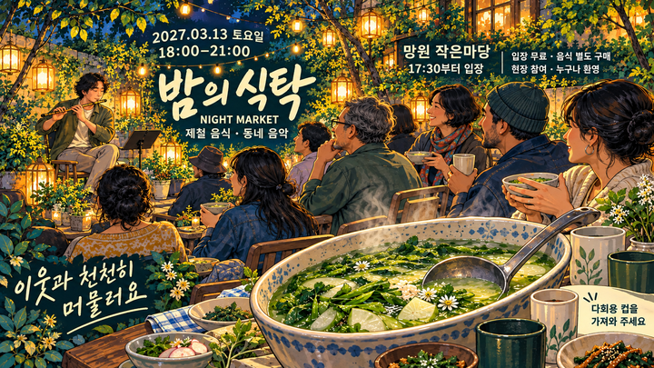
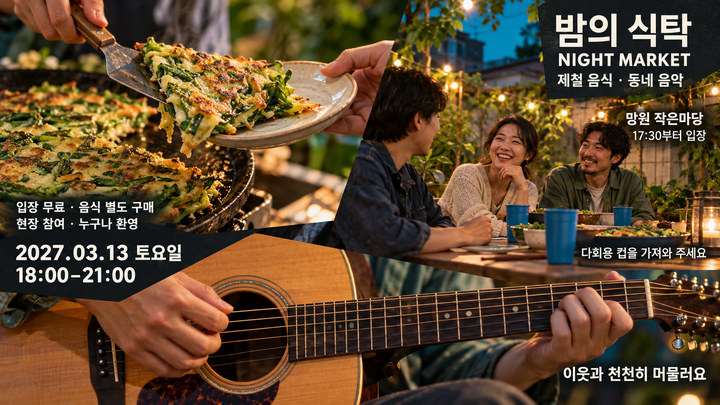
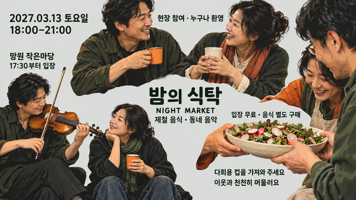
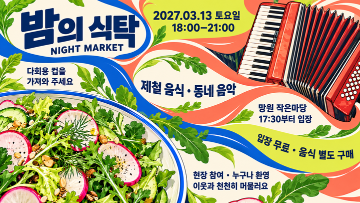

1개 요청 · 서로 다른5개 시안. 보정 전후 원본과 실패 기록을 보존했습니다. 아래는 실제 선택된 결과이며 원본 링크에서 내려받을 수 있습니다. 하이엔드 판정은 독립 평가 결과를 확인해야 합니다. 새20장 캠페인이 아니라 한 요청의 다섯 스타일입니다. 보정본은 새 스타일로 세지 않습니다.

bbd1dd94fe6df3fb6cf2412326b0baf5d9b5d92b718524538260e54a6e44e7df
54dbec3ed065e4eb16e95ae0b0120c02ae76fd0720fa79464e6f6c4bcdbf552ad743b1d137c5eb21b1ec6811138545115f85ec61c23790bc3b7ade512e6160fd
c1d7352cafe9c243256b1ad85877495dffb3170f820459c942781309aa6d6ae8
bf34f06abb60b661766597da76c691d7a29e5a16d25bbf233866722b179df1df실제 선택된 원본 5/5. 사진·3D·흑백 등 장르 자체를 AI 슬롭으로 판정하지 않으며, 내용 연결·글자·구조·재질·마감의 관찰 가능한 결함을 평가합니다.